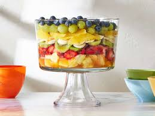

Home
Fruit Salad
Description
This is a healthy snack containing natural ingredients.
Ingredients
These are the ingredients you'll need for this top-rated fruit salad recipe:
Sauce:
- Fresh orange
- Lemon juice
- Packed brown sugar
- Grated orange zest
- Vanilla extract
Salad
- Cubed fresh pineapple
- Hulled and sliced strawberries
- Peeled and sliced kiwi
- Sliced bananas
- Peeled and sectioned oranges
- Seedless grapes
- Blueberries
Note: Of course, this is a super customizable recipe — you can omit certain fruits or add other fruits to suit your taste and what you have on hand!
How to make the Fruit Salad
Here's a brief overview of what you can expect when you make this easy fruit salad:
- Make the sauce on the stove and let it cool.
- Arrange the fruits in a container, then pour the sauce over them.
- Cover and refrigerate to allow the flavors to meld.
Directions
- Gather the ingredients.
- For the sauce: Bring orange juice, lemon juice, brown sugar, orange zest, and lemon zest to a boil in a saucepan over medium-high heat. Reduce heat to medium-low and simmer until slightly thickened, about 5 minutes.
- Remove from heat and stir in vanilla extract. Set aside to cool.
- For the salad: Layer fruit in a large, clear glass bowl in this order: pineapple, strawberries, kiwi fruit, bananas, oranges, grapes, and blueberries. Pour cooled sauce over fruit; cover and refrigerate for 3 to 4 hours before serving.
Serving suggestion:

Actual recipe